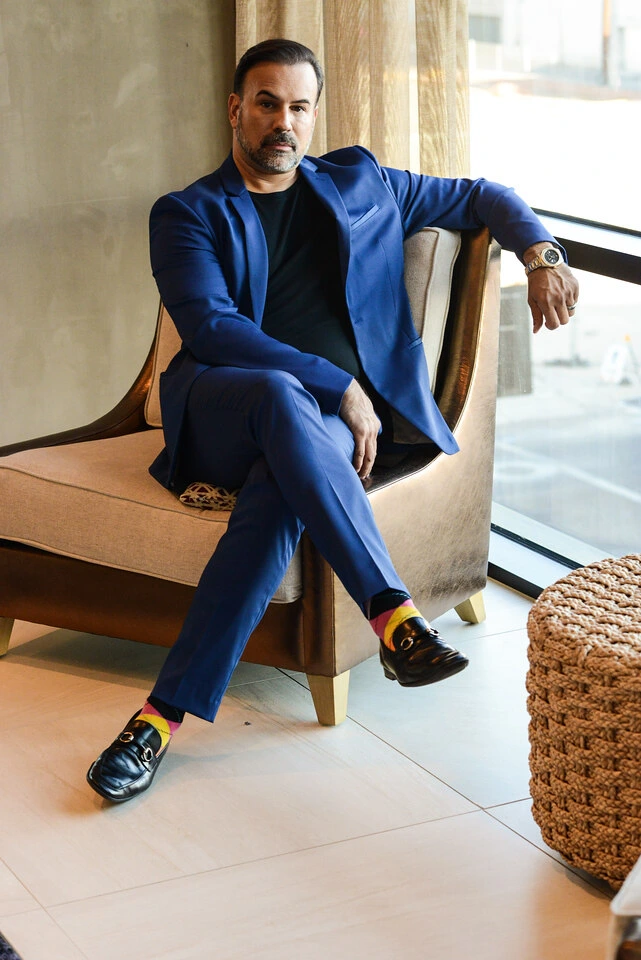
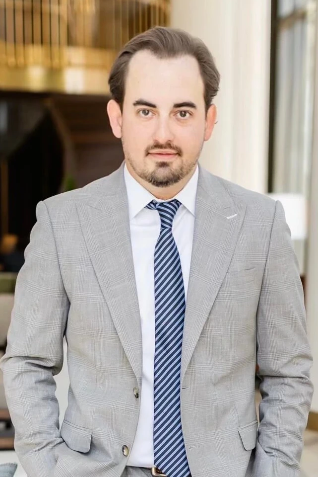

<link rel="stylesheet" href="../Pages/AboutUs/aboutus.css" />
<section>
    <nav class="headerFooter">
        <video autoplay loop muted playsinline  preload="auto" src="../../assets/videos/MissDenmarkVictoria.webm" class="background-video-about"></video>
        <div class="overlay-banner">
            <div class="header-content">
                <h1>ABOUT US</h1>
            </div>
        </div>
    </nav>
    <div class="separador"></div>
    <div class="hero">
        <video autoplay loop muted playsinline  preload="auto" src="../../assets/videos/backgroundStar.webm"></video>
        <div class="content-information">
            <div class="pageant-description">
                <h1>PAGEANTFANS</h1>
                <p class="textabout">PageantFans™ is the only creator and fan app addressing the unmet need of the 700
                    million+ pageant fans and nearly 10 million beauty pageant contestants and queens who compete in more than 350,000
                    pageants around the world every year.
                </p>
                <p class="textabout">
                    Led by a team of technology and pageant industry innovators, PageantFans is the only app of its kind
                    tailored to the global pageant ecosystem, combining content, community and commerce all under one
                    digital roof. PageantFans is slated to achieve a $1B valuation in less than 6 years by disrupting the $32B
                    worldwide pageant industry. Say hello to the next unicorn in tech entertainment.
                </p>
            </div>
            <h1>Founders</h1>
            <div class="ceos">

                <div class="ceoContent">
                    <video autoplay loop muted playsinline  preload="auto" loop src="../../assets/videos/backgraund-about.webm"></video>
                    
                    <div class="ceoText">
                        <h2 class="h2-about">Thom Brodeur</h2>
                        <h3>Founder & CEO</h3>
                        <p>
                            Featured in Fortune as a "beauty industry disruptor" and named by Pageantry Magazine as "one
                            of the most fascinating leaders in the industry." declared "a brilliant strategist with a
                            sharp eye and mind for positioning" by WWD, and recognized by Art & Beauty Magazine as "Man
                            of the Year," Brodeur Beauty Founder and PageantFans™ CEO Thom Brodeur - a
                            well-regarded and widely recognized tech and ecommerce executive known for his market-maker
                            success with companies like GoDaddy, Marketwired and Yandy.com - aims to shake up the 100+
                            year-old beauty pageant Industry and people are watching.
                        </p>
                    </div>
                </div>
            </div>
            <div class="ceos">

                <div class="ceoContent">
                    <video autoplay loop muted playsinline  preload="auto" loop src="../../assets/videos/backgraund-about.webm"></video>
                    <div class="ceoText">
                        <h2 class="h2-about">Lance Goodman</h2>
                        <h3>Co-Founder</h3>
                        <p>
                            Lance Goodman is Co-Founder of PageantFans™ and is responsible for product development,
                            operations and go to market strategy for the company. Goodman is also Co-Founder at SPINTEL,
                            a CEO/Managing Partner at AmeriCoin Capital GP, LLC, and President at Premier Development
                            Partners, and has vast experience in business intelligence, blockchain, digital assets,
                            commercial development, payment processing, software development, and luxury experiences.
                            Lance's educational background includes a degree in Entrepreneurship from Middle Tennessee
                            State University and attendance at the University of Tennessee.
                        </p>
                    </div>
                    
                </div>
            </div>
            <h1>Awards</h1>
            <div class="pageants-awards">
                <div class="awardscard">
                    
                    <div class="awars-text">
                        <h2>AWARD WINNING</h2>
                        <p>
                            PageantFans is an award-winning creator and fan app for beauty queens, pageant contestants
                            and the global pageant audience and ecosystem.
                        </p>
                    </div>
                </div>
            </div>
        </div>
    </div>
</section>  